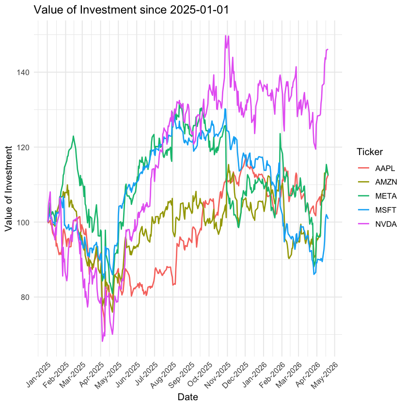
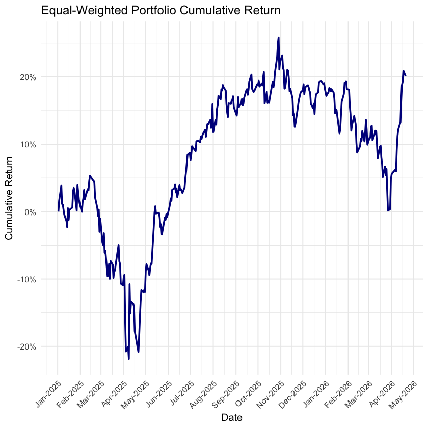

Topic 5.4 - 面板数据¶
1. 面板数据的定义¶
面板数据是横截面数据与时间序列数据的结合，既有多个个体，又有多个时间点的数据：
- 既可以将某一观测值与同一时间点上的其他观测值进行横向比较，也能与该观测值自身的历史数据进行纵向对比
- 这其实是一种视野拓宽，避免了单纯横截面数据或时间序列数据的局限性
2. 面板数据的组织形式¶
面板数据的组织形式其实就是我们之前探讨的数据透视表的两种形式：
- 例如，我们读取一个面板数据的样例，这个数据其实就是一个宽格式的数据：
panel_wide <- read_csv('panel_example.csv')
panel_wide
| id <dbl> | Year1 <dbl> | Year2 <dbl> | Year3 <dbl> | Year4 <dbl> | Year5 <dbl> |
|----------|-------------|-------------|-------------|-------------|-------------|
| 1 | 0.5199834 | 0.6004036 | 0.58387797 | 0.56171328 | 0.55395381 |
| 2 | 0.2148590 | 0.2516958 | 0.04580589 | 0.62569649 | 0.39640643 |
| 3 | 0.0319499 | 0.8799605 | 0.36269747 | 0.27354329 | 0.70687671 |
| 4 | 0.8174250 | 0.5501881 | 0.85172635 | 0.86938156 | 0.59369123 |
| 5 | 0.7428762 | 0.1095980 | 0.89537491 | 0.03136036 | 0.20472127 |
| 6 | 0.4388761 | 0.5542981 | 0.74926423 | 0.58132211 | 0.02738414 |
| 7 | 0.7477063 | 0.9019629 | 0.50147304 | 0.61237459 | 0.64042138 |
| 8 | 0.3715275 | 0.8861051 | 0.94162649 | 0.81915216 | 0.24463109 |
| 9 | 0.4823829 | 0.1198512 | 0.55991136 | 0.49164875 | 0.26730600 |
| 10 | 0.5422827 | 0.8065183 | 0.78080355 | 0.29574789 | 0.72046894 |
- 我们可以将它转换为长格式的数据：
panel_long <- panel_wide |>
pivot_longer(
cols = starts_with("Year"),
names_to = "Year",
values_to = "Value"
)
panel_long
| id <dbl> | Year <chr> | Value <dbl> |
|----------|------------|-------------|
| 1 | Year1 | 0.51998340 |
| 1 | Year2 | 0.60040363 |
| 1 | Year3 | 0.58387797 |
| 1 | Year4 | 0.56171328 |
| 1 | Year5 | 0.55395381 |
| 2 | Year1 | 0.21485898 |
| 2 | Year2 | 0.25169584 |
| 2 | Year3 | 0.04580589 |
| 2 | Year4 | 0.62569649 |
| 2 | Year5 | 0.39640643 |
| 3 | Year1 | 0.03194990 |
| 3 | Year2 | 0.87996046 |
| 3 | Year3 | 0.36269747 |
| 3 | Year4 | 0.27354329 |
| 3 | Year5 | 0.70687671 |
| 4 | Year1 | 0.81742501 |
| 4 | Year2 | 0.55018810 |
| 4 | Year3 | 0.85172635 |
| 4 | Year4 | 0.86938156 |
| 4 | Year5 | 0.59369123 |
| 5 | Year1 | 0.74287623 |
| 5 | Year2 | 0.10959797 |
| 5 | Year3 | 0.89537491 |
| 5 | Year4 | 0.03136036 |
| 5 | Year5 | 0.20472127 |
| 6 | Year1 | 0.43887615 |
| 6 | Year2 | 0.55429814 |
| 6 | Year3 | 0.74926423 |
| 6 | Year4 | 0.58132211 |
| 6 | Year5 | 0.02738414 |
| 7 | Year1 | 0.74770627 |
| 7 | Year2 | 0.90196289 |
| 7 | Year3 | 0.50147304 |
| 7 | Year4 | 0.61237459 |
| 7 | Year5 | 0.64042138 |
| 8 | Year1 | 0.37152753 |
| 8 | Year2 | 0.88610512 |
| 8 | Year3 | 0.94162649 |
| 8 | Year4 | 0.81915216 |
| 8 | Year5 | 0.24463109 |
| 9 | Year1 | 0.48238290 |
| 9 | Year2 | 0.11985123 |
| 9 | Year3 | 0.55991136 |
| 9 | Year4 | 0.49164875 |
| 9 | Year5 | 0.26730600 |
| 10 | Year1 | 0.54228273 |
| 10 | Year2 | 0.80651829 |
| 10 | Year3 | 0.78080355 |
| 10 | Year4 | 0.29574789 |
| 10 | Year5 | 0.72046894 |
3. 面板数据的获取¶
首先，我们在 R 中导入我们之后分析要使用的面板数据：
- 事实上就是使用
quantmod包同时获取多个股票的历史数据：
library(tidyverse)
library(quantmod)
ticker_list <- c("MSFT", "AAPL", "AMZN", "NVDA", "META")
getSymbols(ticker_list, from = "2025-01-01", auto.assign = TRUE)
[1] "MSFT" "AAPL" "AMZN" "NVDA" "META"
- 这里我们获取了五只股票的历史数据，但是这个5只股票的数据其实是分别存储在5个不同的对象中的，我们分别展示一下：
MSFT
MSFT.Open MSFT.High MSFT.Low MSFT.Close MSFT.Volume MSFT.Adjusted
2025-01-02 425.53 426.07 414.85 418.58 16896500 414.5686
2025-01-03 421.08 424.03 419.54 423.35 16662900 419.2929
2025-01-06 428.00 434.32 425.48 427.85 20573600 423.7498
2025-01-07 429.00 430.65 420.80 422.37 18139100 418.3223
2025-01-08 423.46 426.97 421.54 424.56 15054600 420.4913
... ... ... ... ... ... ...
2026-04-14 387.92 394.69 386.52 393.11 37504500 393.1100
2026-04-15 398.00 414.37 396.73 411.22 45063400 411.2200
2026-04-16 419.86 420.82 412.14 420.26 41642400 420.2600
2026-04-17 424.82 431.58 420.69 422.79 48568200 422.7900
2026-04-20 421.15 423.33 416.30 418.07 27501100 418.0700
AAPL
AAPL.Open AAPL.High AAPL.Low AAPL.Close AAPL.Volume AAPL.Adjusted
2025-01-02 248.93 249.10 241.82 243.85 55740700 242.5252
2025-01-03 243.36 244.18 241.89 243.36 40244100 242.0378
2025-01-06 244.31 247.33 243.20 245.00 45045600 243.6689
2025-01-07 242.98 245.55 241.35 242.21 40856000 240.8941
2025-01-08 241.92 243.71 240.05 242.70 37628900 241.3814
... ... ... ... ... ... ...
2026-04-14 259.25 261.93 257.19 258.83 48370700 258.8300
2026-04-15 258.16 266.56 257.81 266.43 49913500 266.4300
2026-04-16 266.80 267.16 261.27 263.40 43323100 263.4000
2026-04-17 266.96 272.30 266.72 270.23 61436200 270.2300
2026-04-20 270.33 274.28 270.29 273.05 36472700 273.0500
AMZN
AMZN.Open AMZN.High AMZN.Low AMZN.Close AMZN.Volume AMZN.Adjusted
2025-01-02 222.03 225.15 218.19 220.22 33956600 220.22
2025-01-03 222.51 225.36 221.62 224.19 27515600 224.19
2025-01-06 226.78 228.84 224.84 227.61 31849800 227.61
2025-01-07 227.90 228.38 221.46 222.11 28084200 222.11
2025-01-08 223.19 223.52 220.20 222.13 25033300 222.13
... ... ... ... ... ... ...
2026-04-14 241.78 252.18 241.78 249.02 72685000 249.02
2026-04-15 249.25 250.44 247.20 248.50 43045200 248.50
2026-04-16 248.51 250.00 244.20 249.70 41895700 249.70
2026-04-17 254.99 256.18 250.11 250.56 52029300 250.56
2026-04-20 249.19 250.18 245.37 248.28 39132900 248.28
NVDA
NVDA.Open NVDA.High NVDA.Low NVDA.Close NVDA.Volume NVDA.Adjusted
2025-01-02 136.00 138.88 134.63 138.31 198247200 138.2647
2025-01-03 140.01 144.90 139.73 144.47 229322500 144.4227
2025-01-06 148.59 152.16 147.82 149.43 265377400 149.3811
2025-01-07 153.03 153.13 140.01 140.14 351782200 140.0941
2025-01-08 142.58 143.95 137.56 140.11 227349900 140.0641
... ... ... ... ... ... ...
2026-04-14 190.84 196.51 190.77 196.51 161307000 196.5100
2026-04-15 196.54 200.40 195.74 198.87 185338400 198.8700
2026-04-16 197.43 199.85 195.81 198.35 134012900 198.3500
2026-04-17 199.90 201.70 199.27 201.68 160324400 201.6800
2026-04-20 199.98 202.17 197.84 202.06 119047400 202.0600
META
META.Open META.High META.Low META.Close META.Volume META.Adjusted
2025-01-02 589.72 604.91 587.82 599.24 12682300 596.8453
2025-01-03 604.76 609.50 596.41 604.63 11436800 602.2138
2025-01-06 611.83 630.99 605.62 630.20 14560800 627.6816
2025-01-07 631.70 632.10 608.23 617.89 12071500 615.4209
2025-01-08 613.40 616.44 602.79 610.72 10085800 608.2794
... ... ... ... ... ... ...
2026-04-14 643.22 666.26 639.37 662.49 17818000 662.4900
2026-04-15 667.00 678.50 664.22 671.58 14952600 671.5800
2026-04-16 675.99 677.58 667.75 676.87 9544800 676.8700
2026-04-17 678.60 691.52 675.13 688.55 16283500 688.5500
2026-04-20 681.36 683.38 668.00 670.91 12498100 670.9100
- 可以发现，我们获取的其实是五个单独的时间序列数据，并不是一个面板数据
-
这里，我们需要将它们合并成一个面板数据：
- 我们使用
mget()函数将它们放在一个列表中，并且设置inherits = TRUE来确保我们能够获取到这些对象 - 这个列表中每个元素都是一个 xts 对象，包含了对应股票的历史数据
- 我们使用
prices_list <- mget(ticker_list, inherits = TRUE)
prices_list
$MSFT
MSFT.Open MSFT.High MSFT.Low MSFT.Close MSFT.Volume MSFT.Adjusted
2025-01-02 425.53 426.07 414.85 418.58 16896500 414.5686
2025-01-03 421.08 424.03 419.54 423.35 16662900 419.2929
2025-01-06 428.00 434.32 425.48 427.85 20573600 423.7498
2025-01-07 429.00 430.65 420.80 422.37 18139100 418.3223
2025-01-08 423.46 426.97 421.54 424.56 15054600 420.4913
... ... ... ... ... ... ...
2026-04-14 387.92 394.69 386.52 393.11 37504500 393.1100
2026-04-15 398.00 414.37 396.73 411.22 45063400 411.2200
2026-04-16 419.86 420.82 412.14 420.26 41642400 420.2600
2026-04-17 424.82 431.58 420.69 422.79 48568200 422.7900
2026-04-20 421.15 423.33 416.30 418.07 27501100 418.0700
$AAPL
AAPL.Open AAPL.High AAPL.Low AAPL.Close AAPL.Volume AAPL.Adjusted
2025-01-02 248.93 249.10 241.82 243.85 55740700 242.5252
2025-01-03 243.36 244.18 241.89 243.36 40244100 242.0378
2025-01-06 244.31 247.33 243.20 245.00 45045600 243.6689
2025-01-07 242.98 245.55 241.35 242.21 40856000 240.8941
2025-01-08 241.92 243.71 240.05 242.70 37628900 241.3814
... ... ... ... ... ... ...
2026-04-14 259.25 261.93 257.19 258.83 48370700 258.8300
2026-04-15 258.16 266.56 257.81 266.43 49913500 266.4300
2026-04-16 266.80 267.16 261.27 263.40 43323100 263.4000
2026-04-17 266.96 272.30 266.72 270.23 61436200 270.2300
2026-04-20 270.33 274.28 270.29 273.05 36472700 273.0500
$AMZN
AMZN.Open AMZN.High AMZN.Low AMZN.Close AMZN.Volume AMZN.Adjusted
2025-01-02 222.03 225.15 218.19 220.22 33956600 220.22
2025-01-03 222.51 225.36 221.62 224.19 27515600 224.19
2025-01-06 226.78 228.84 224.84 227.61 31849800 227.61
2025-01-07 227.90 228.38 221.46 222.11 28084200 222.11
2025-01-08 223.19 223.52 220.20 222.13 25033300 222.13
... ... ... ... ... ... ...
2026-04-14 241.78 252.18 241.78 249.02 72685000 249.02
2026-04-15 249.25 250.44 247.20 248.50 43045200 248.50
2026-04-16 248.51 250.00 244.20 249.70 41895700 249.70
2026-04-17 254.99 256.18 250.11 250.56 52029300 250.56
2026-04-20 249.19 250.18 245.37 248.28 39132900 248.28
$NVDA
NVDA.Open NVDA.High NVDA.Low NVDA.Close NVDA.Volume NVDA.Adjusted
2025-01-02 136.00 138.88 134.63 138.31 198247200 138.2647
2025-01-03 140.01 144.90 139.73 144.47 229322500 144.4227
2025-01-06 148.59 152.16 147.82 149.43 265377400 149.3811
2025-01-07 153.03 153.13 140.01 140.14 351782200 140.0941
2025-01-08 142.58 143.95 137.56 140.11 227349900 140.0641
... ... ... ... ... ... ...
2026-04-14 190.84 196.51 190.77 196.51 161307000 196.5100
2026-04-15 196.54 200.40 195.74 198.87 185338400 198.8700
2026-04-16 197.43 199.85 195.81 198.35 134012900 198.3500
2026-04-17 199.90 201.70 199.27 201.68 160324400 201.6800
2026-04-20 199.98 202.17 197.84 202.06 119047400 202.0600
$META
META.Open META.High META.Low META.Close META.Volume META.Adjusted
2025-01-02 589.72 604.91 587.82 599.24 12682300 596.8453
2025-01-03 604.76 609.50 596.41 604.63 11436800 602.2138
2025-01-06 611.83 630.99 605.62 630.20 14560800 627.6816
2025-01-07 631.70 632.10 608.23 617.89 12071500 615.4209
2025-01-08 613.40 616.44 602.79 610.72 10085800 608.2794
... ... ... ... ... ... ...
2026-04-14 643.22 666.26 639.37 662.49 17818000 662.4900
2026-04-15 667.00 678.50 664.22 671.58 14952600 671.5800
2026-04-16 675.99 677.58 667.75 676.87 9544800 676.8700
2026-04-17 678.60 691.52 675.13 688.55 16283500 688.5500
2026-04-20 681.36 683.38 668.00 670.91 12498100 670.9100
之后，我们可以将这个列表合并为 tibble 格式的面板数据：
- 这里，我们使用
imap_dfr()函数，这个函数会遍历列表中的每个元素，并且将它们合并成一个数据框 - 第一个参数表示我们要遍历的列表
-
第二个参数是一个匿名函数，这个函数会对列表中的每个元素进行处理：
~表示这是一个匿名函数xt <- .x表示将当前列表元素，也就是一个 xts 对象，赋值给变量xttic <- .y表示将当前列表元素的名称，也就是股票的 ticker，赋值给变量tic-
df <- as_tibble(data.frame(date = index(xt), coredata(xt)))表示将 xts 对象转换为一个 tibble 数据框- 其中
date = index(xt)表示将 xts 对象的索引，也就是日期，作为数据框的一列 coredata(xt)表示将 xts 对象的核心数据，也就是股票的历史数据，作为数据框的其他列
- 其中
-
names(df) <- sub("^.*\\.", "", names(df))表示将数据框的列名进行处理：- 这当中使用了正则表达式，
^.*\\.表示匹配以任意字符开头，直到最后一个点为止的字符串，然后将其替换为空字符串，这样就只保留了列名的后缀部分 - 例如，
MSFT.Open经过这个处理后就变成了Open，AAPL.Close变成了Close，以此类推
- 这当中使用了正则表达式，
-
df %>% mutate(ticker = tic) %>% select(date, ticker, Open, High, Low, Close, Volume, Adjusted)表示对数据框进行进一步的处理：mutate(ticker = tic)表示添加一个新的列ticker，其值为当前股票的 tickerselect(date, ticker, Open, High, Low, Close, Volume, Adjusted)表示选择我们需要的列，按照指定的顺序排列
all_stocks <- imap_dfr(
prices_list,
~ {
xt <- .x
tic <- .y
df <- as_tibble(data.frame(date = index(xt), coredata(xt)))
names(df) <- sub("^.*\\.", "", names(df))
df |>
mutate(ticker = tic) |>
select(date, ticker, Open, High, Low, Close, Volume, Adjusted)
}
)
all_stocks
| date <date> | ticker <chr> | Open <dbl> | High <dbl> | Low <dbl> | Close <dbl> | Volume <dbl> | Adjusted <dbl> |
|-------------|--------------|------------|------------|-----------|-------------|--------------|----------------|
| 2025-01-02 | MSFT | 425.53 | 426.07 | 414.85 | 418.58 | 16896500 | 414.5686 |
| 2025-01-03 | MSFT | 421.08 | 424.03 | 419.54 | 423.35 | 16662900 | 419.2929 |
| 2025-01-06 | MSFT | 428.00 | 434.32 | 425.48 | 427.85 | 20573600 | 423.7498 |
| 2025-01-07 | MSFT | 429.00 | 430.65 | 420.80 | 422.37 | 18139100 | 418.3223 |
| 2025-01-08 | MSFT | 423.46 | 426.97 | 421.54 | 424.56 | 15054600 | 420.4913 |
| ... | ... | ... | ... | ... | ... | ... | ... |
| 2026-04-14 | META | 643.22 | 666.26 | 639.37 | 662.49 | 17818000 | 662.4900 |
| 2026-04-15 | META | 667.00 | 678.50 | 664.22 | 671.58 | 14952600 | 671.5800 |
| 2026-04-16 | META | 675.99 | 677.58 | 667.75 | 676.87 | 9544800 | 676.8700 |
| 2026-04-17 | META | 678.60 | 691.52 | 675.13 | 688.55 | 16283500 | 688.5500 |
| 2026-04-20 | META | 681.36 | 683.38 | 668.00 | 670.91 | 12498100 | 670.9100 |
这样，我们就成功地将五只股票的历史数据合并成了一个面板数据
- 并且转换为了一个
tibble数据框的格式，这样我们就可以更方便地进行数据分析了 - 这个面板数据中，每一行表示一个特定日期和特定股票的交易数据
- 之后，我们就可以对这个面板数据进行进一步的分析了
4. 面板数据的分组计算¶
(1) 面板数据分组计算的概念¶
我们之前介绍到的分组计算的概念，在面板数据中尤其重要
- 比方说，如果我们想要计算每天所有股票的收益率之和，那就要按照日期进行分组计算
- 比方说，如果我们想要计算每只股票的总收益，那就要按照股票进行分组计算
下面这个简单的面板数据展示了按时间分组和按对象分组的区别：

在金融数据的情景下：
- 如果我们计算收益率，计算方法是本行价格减去上一行价格，再除以上一行价格
- 但是，这个操作必须要在同一只股票的时间序列数据中进行，不能跨股票进行计算，否则就会得到错误的结果
- 比方说下表中，计算股票 B 的收益率是不能使用股票 A 的价格数据的：
| date | ticker | price | price_lag | return |
|---|---|---|---|---|
| 2025-01-02 | A | 100 | NA | NA |
| 2025-01-03 | A | 105 | 100 | (105 - 100) / 100 |
| 2025-01-04 | A | 110 | 105 | (110 - 105) / 105 |
| 2025-01-02 | B | 200 | NA | NA |
| 2025-01-03 | B | 210 | 200 | (210 - 200) / 200 |
| 2025-01-04 | B | 220 | 210 | (220 - 210) / 210 |
这里，我们就可以使用之前介绍过的 group_by() 和 mutate() 函数来实现这个分组计算：
- 并且，在排序的时候，我们需要使用
arrange()函数，并且设置by_group = TRUE来确保我们是在每个分组内进行排序的 - 除此之外，我们还可以使用
ungroup()函数来取消分组，这样后续的计算就不会受到分组的影响了
(2) 面板数据按对象分组¶
首先，我们来按股票分组
- 我们计算一下每只股票的收益率与累计收益率：
all_stocks <- all_stocks |>
group_by(ticker) |>
arrange(date, .by_group = TRUE) |>
mutate(
Return = Adjusted / lag(Adjusted) - 1,
Cumret = cumprod(1 + coalesce(Return, 0)) - 1
) |>
ungroup()
all_stocks
| date <date> | ticker <chr> | Open <dbl> | High <dbl> | Low <dbl> | Close <dbl> | Volume <dbl> | Adjusted <dbl> | Return <dbl> | Cumret <dbl> |
|-------------|--------------|------------|------------|-----------|-------------|--------------|----------------|--------------|--------------|
| 2025-01-02 | AAPL | 248.93 | 249.10 | 241.82 | 243.85 | 55740700 | 242.5252 | NA | 0.000000000 |
| 2025-01-03 | AAPL | 243.36 | 244.18 | 241.89 | 243.36 | 40244100 | 242.0378 | -0.002009484 | -0.002009484 |
| 2025-01-06 | AAPL | 244.31 | 247.33 | 243.20 | 245.00 | 45045600 | 243.6689 | 0.006739044 | 0.004716018 |
| 2025-01-07 | AAPL | 242.98 | 245.55 | 241.35 | 242.21 | 40856000 | 240.8941 | -0.011387753 | -0.006725439 |
| 2025-01-08 | AAPL | 241.92 | 243.71 | 240.05 | 242.70 | 37628900 | 241.3814 | 0.002023027 | -0.004716018 |
| ... | ... | ... | ... | ... | ... | ... | ... | ... | ... |
| 2026-04-14 | NVDA | 190.84 | 196.51 | 190.77 | 196.51 | 161307000 | 196.5100 | 0.038032841 | 0.4212594 |
| 2026-04-15 | NVDA | 196.54 | 200.40 | 195.74 | 198.87 | 185338400 | 198.8700 | 0.012009570 | 0.4383281 |
| 2026-04-16 | NVDA | 197.43 | 199.85 | 195.81 | 198.35 | 134012900 | 198.3500 | -0.002614718 | 0.4345673 |
| 2026-04-17 | NVDA | 199.90 | 201.70 | 199.27 | 201.68 | 160324400 | 201.6800 | 0.016788437 | 0.4586514 |
| 2026-04-20 | NVDA | 199.98 | 202.17 | 197.84 | 202.06 | 119047400 | 202.0600 | 0.001884197 | 0.4613998 |
- 之后，我们还可以用折线图来展示一下每只股票的累计收益率的变化情况：
ggplot(all_stocks, aes(x = date, y = 100 * (Cumret + 1), color = ticker)) +
geom_line(size = 0.75) +
labs(
title = "Value of Investment since 2025-01-01",
x = "Date",
y = "Value of Investment",
color = "Ticker"
) +
scale_x_date(date_breaks = "1 months", date_labels = "%b-%Y") +
theme_minimal(base_size = 12) +
theme(axis.text.x = element_text(angle = 45, hjust = 1))

(2) 面板数据按时间分组¶
接着，我们再来看一个按照时间分组的例子
- 我们来计算一下，每日的总收益率，以及每日收益率的累计，假设我们仓内每只股票的权重相等：
pf_ew <- all_stocks |>
group_by(date) |>
summarise(
ew_ret = mean(Return, na.rm = TRUE)
) |>
arrange(date) |>
mutate(
ew_cumret = cumprod(1 + coalesce(ew_ret, 0)) - 1
)
pf_ew
| date <date> | ew_ret <dbl> | ew_cumret <dbl> |
|-------------|---------------|-----------------|
| 2025-01-02 | NaN | 0.0000000000 |
| 2025-01-03 | 0.0161892026 | 0.0161892026 |
| 2025-01-06 | 0.0218492189 | 0.0383921429 |
| 2025-01-07 | -0.0260125842 | 0.0113808799 |
| 2025-01-08 | -0.0009040644 | 0.0104665264 |
| ... | ... | ... |
| 2026-04-14 | 0.0282933865 | 0.164540673 |
| 2026-04-15 | 0.0198147740 | 0.187615784 |
| 2026-04-16 | 0.0041403911 | 0.192532977 |
| 2026-04-17 | 0.0138877499 | 0.209094577 |
| 2026-04-20 | -0.0067125920 | 0.200978419 |
- 同样的，我们也可以用折线图来展示一下这个等权投资组合的累计收益率的变化情况：
ggplot(pf_ew, aes(x = date, y = ew_cumret)) +
geom_line(color = "darkblue", size = 1) +
labs(
title = "Equal-Weighted Portfolio Cumulative Return",
x = "Date", y = "Cumulative Return"
) +
scale_x_date(date_breaks = "1 months", date_labels = "%b-%Y") +
scale_y_continuous(labels = scales::percent) +
theme_minimal(base_size = 12) +
theme(axis.text.x = element_text(angle = 45, hjust = 1))
